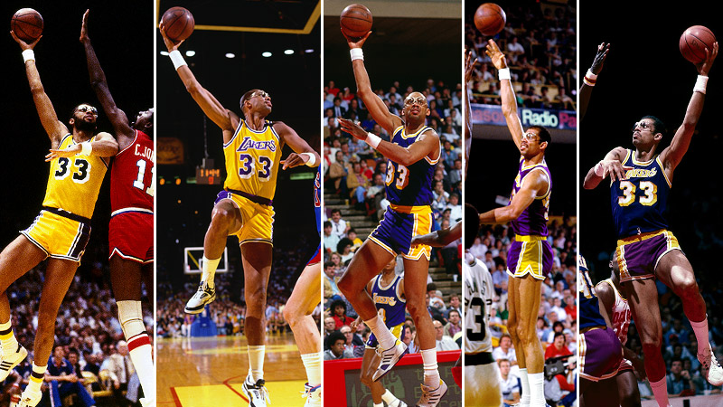

Kareem Abdul-Jabbar "Cap"

"I try to do the right thing at the right time. They may just be little things, but usually they make the difference between winning and losing." - Kareem Abdul-Jabbar
Kareem Abdul-Jabbar's Career
UCLA and Early NBA Years
- 1969 NBA Draft: 1st overall pick by the Milwaukee Bucks.
- Rookie of the Year: 1970.
- NBA Championships: Won his first NBA title with the Bucks in 1971.
- Scoring Champion: Led the league in scoring twice (1971, 1972).
Lakers Dynasty
- NBA Championships: Five titles with the Los Angeles Lakers (1980, 1982, 1985, 1987, 1988).
- Most Valuable Player: Six-time MVP (1971, 1972, 1974, 1976, 1977, 1980).
- All-Time Leading Scorer: Became the NBA's all-time leading scorer in 1984, a record he still holds today.
Accolades and Achievements
- All-Star Appearances: 19-time NBA All-Star.
- Rebounding and Blocks: Top-3 in total career rebounds and blocks.
- Retirement: Ended his playing career in 1989 after 20 seasons.
Legacy and Life After Basketball
- Activism and Writing: Known for his contributions to social issues and as a best-selling author.
- Hall of Fame: Inducted into the Naismith Memorial Basketball Hall of Fame in 1995.
- Presidential Medal of Freedom: Awarded in 2016 for his contributions on and off the court.
Abdul-Jabbar's Legacy
Kareem Abdul-Jabbar's towering presence in the NBA is marked not only by his records but also by his influence as a thoughtful activist.
His Skyhook remains one of the most iconic moves in basketball, and his impact extends beyond the sport into cultural and social realms.